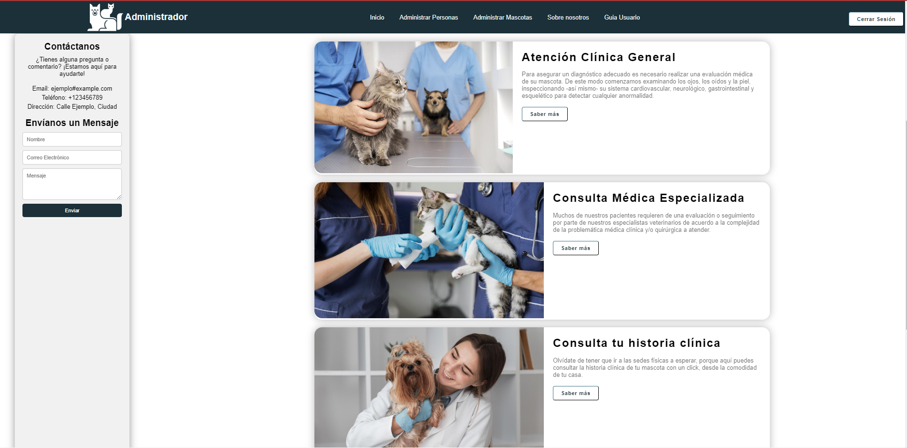

Guía de usuario para {{rol}}
Pantalla De Inicio
Para iniciar sesión sitúa el cursor en el botón iniciar sesión y presiona click derecho para ir a la ventana correspondiente

Si no tienes un usuario y contraseña, pídele al administrador en tu veterinaria más cercana que te proporcione el tuyo

En la pantalla de inicio puede obtener información acerca de nuestros procedimientos, así como información de la empresa
Como administrador puedes acceder a las siguientes pantallas:
Administrar Personas
Puedes gestionar al personal y clientes

Para agregar una nueva persona presiona el botón "agregar persona", ubicado en la parte superior derecha. Al presionarlo, se mostrará el siguiente formulario, el cual tendrá que diligenciar y enviar
Para editar algún registro presiona el botón "editar" e ingresarás al formulario correspondiente
Llena el formulario y envíalo, para así guardar los cambios
Si deseas eliminar alguna persona, presiona en el botón de "eliminar"

Si deseas ver las credenciales de un vendedor o de un veterinario, presiona el botón "credenciales" y verás las credenciales que le corresponden al usuario seleccionado

Administrar Mascotas
Para administrar mascotas, presiona el botón "Administrar Mascotas" y serás direccionado a dicha pantalla

Si deseas agregar una mascota, presiona en el botón "agregar mascota"
Si deseas ver el historial de vacunas de alguna mascota, presiona el botón "historial de vacunas" del registro deseado

Si deseas ver el historial clínico de alguna mascota, presiona el botón "historial clínico" del registro deseado
Historial Clínico
En esta pantalla puede agregar, editar o eliminar un registro de la historia clínica de la mascota selecionada previamente
Si presionas el bobtón "agregar registro" aparecerá el siguiente formulario, donde podrás diligenciar los campos correspondientes

Si presionas el botón "editar" de cualquier registro, podrás hacer cambios del registro seleccionado en el siguiente formulario: